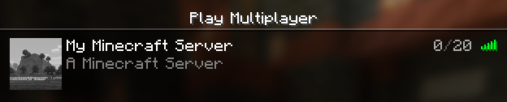

Setting a Server Icon
A server icon is a great way to personalize your server.
- Open the image you want to use as a server icon with the Photos app.
- Right Click over the image and select Resize image
-
Set the Width (px) and Height (px) both to 64, and the File
type to PNG
Note: If necessary, click the link icon between the Width and Height fields to break the aspect ratio.

- Click Save
-
Save the image as server-icon to the main folder of your
server.

- Reload the server with /reload followed by /reload confirm
-
Refresh the connections of the server list in-game
Before reload:
After reload: